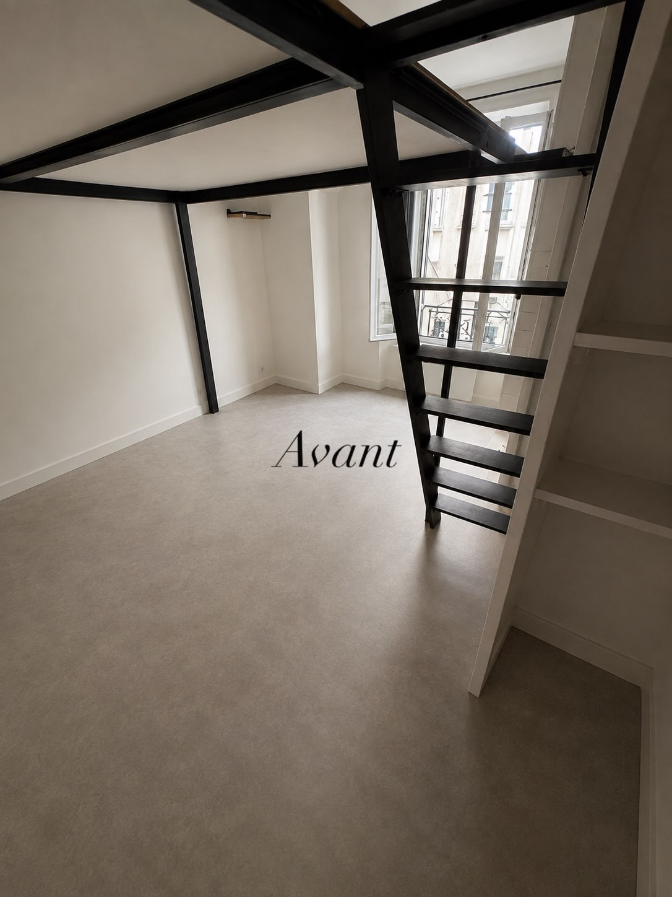

Avant Après
Après
Rénovation intérieure • Avant / Après
Rénovation d'un studio à Grenoble : Pose de sol PVC imitation bois
🔨 Un nouveau sol, une nouvelle ambiance ! Transformation radicale de ce studio avec la dépose de l'ancien revêtement et la pose soignée de lames PVC imitation chêne naturel. Un résultat à la fois esthétique, chaleureux, silencieux et durable, qui redonne une vraie seconde vie et valorise immédiatement le logement.